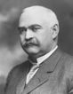

FORMER JUDGES
Judge Frank M. Powers
Frank Powers was born near Angola, Indiana on April 3, 1860 and lived his whole
life in Steuben County. He studied law in the office of Woodhull and Croxton in
Angola and began practicing law in 1882.
Judge Powers was Mason and a Knight of Pythias. He was Circuit Judge for
Steuben and Dekalb counties for four years, from 1910 to 1914.
In November 1914, he was elected as a Democrat to the Indiana Appellate Court,
but served on the court for only one month and two days, from January 1, 1915 to
Febuary 3, 1915.
He was ill when he took his seat on the Court and returned to Angola on January
23rd, suffering from pneumonia. He died at home on February 3, 1915.
life in Steuben County. He studied law in the office of Woodhull and Croxton in
Angola and began practicing law in 1882.
Judge Powers was Mason and a Knight of Pythias. He was Circuit Judge for
Steuben and Dekalb counties for four years, from 1910 to 1914.
In November 1914, he was elected as a Democrat to the Indiana Appellate Court,
but served on the court for only one month and two days, from January 1, 1915 to
Febuary 3, 1915.
He was ill when he took his seat on the Court and returned to Angola on January
23rd, suffering from pneumonia. He died at home on February 3, 1915.
